Guaíra, do caminho
ao horizonte.
A revisão dos fundos acrescenta bairros distantes, campos irrigados, moinhos e oficinas com profundidade. Acompanhe as comparações das seis fases e as revisões de percursos, inimigos, mecanismos e chefes.
Uma paisagem contínua. Oficinas com profundidade.
Campos, canais, moinhos e bairros distantes dão contexto às quatro fases externas. Galeria e Alívio ganharam vãos, pilares, janelas e fundações. O aqueduto recebeu arcos de alvenaria; a emenda da Travessia deixou de duplicar o sol. Animações discretas acompanham o relógio do jogo e respeitam pausa e movimento reduzido.
Comparar os fundos e assistir aos seis percursos · Jogar em Guaíra
Defesas visíveis, aberturas para reagir
O teto do vagonete rebate pisões enquanto anda e abre na freada; a sentada rompe a proteção. O investidor prepara a corrida em três poses e expõe a testa na recuperação. Os avisos continuam acompanhando o alvo abaixo do beiral ou da quicada. Cinco encontros nas plataformas reais conferem essas respostas sem dano, dando continuidade à revisão das seis famílias e dos 44 inimigos.
Ver os contra-ataques e as novas poses · Pinçadas, arremessos e seis famílias · Jogar em Guaíra
Peso no arranque, intenção na virada
A investida acelera, ganha velocidade e freia de verdade. Seis poses articulam a virada, as patas acompanham a distância percorrida e a poeira permanece nos apoios no chão. Os dois arcos continuam exigindo atenção à altura e ao pouso.
Ver as lutas e as novas animações · Enfrentar Ossabravo · Revisão dos arcos
Mais peso e clareza no confronto
Frenagem física, passadas que acompanham a velocidade e uma crista de água mais legível. Pousos, impactos, sombras, avisos dos registros e bocais foram refinados.
Ver as animações e os confrontos completos · Jogar o confronto atualizado · Rodada anterior
Observar a água. Escolher o caminho.
O canal pede uma decisão
A primeira ponte termina em uma ilha firme. Há espaço seco para observar a pressão antes de atravessar a grelha e saltar o segundo canal. A margem seguinte aparece antes do salto.
A manutenção muda o percurso
Cinco moedas conduzem pelos apoios até a sacada. Vencer a patrulha dá acesso ao registro que fecha essa descarga. As descobertas ficam no mapa depois de concluir a fase.
A placa ergue a ponte; a ilha permite observar a descarga antes do segundo salto. Recorte de uma execução completa, sem dano. Captura a 30 fps, física a 60 Hz, sem áudio.
Ver a execução completa desde o início · Consultar a captura nativa
A queda permite reagir
A tábua cede sobre a parte seca da ilha. É possível recuperar o percurso por baixo. Errar o salto seguinte ainda provoca queda e retomada pelo checkpoint conquistado.
O cenário explica o salto
A estrutura aberta deixa o canal visível sob a sacada. A patrulha fica separada do salto inferior. No retorno, a câmera passa a mudar de direção de forma mais suave.
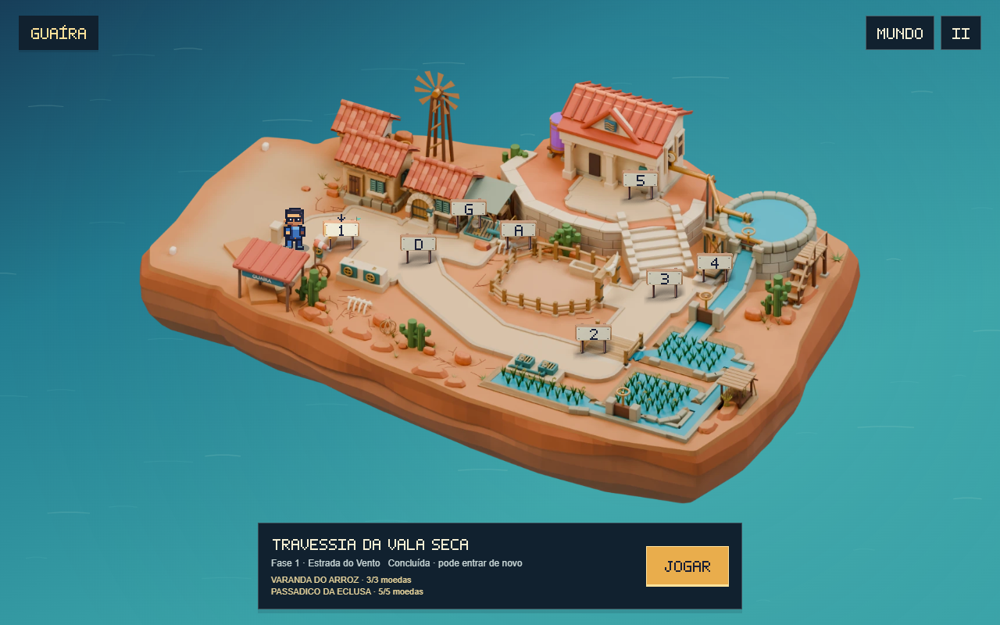
As gravações são partidas ensaiadas e não estimam uma primeira tentativa. Esta rodada reconstrói o trecho central da Travessia; a extensão horizontal da fase permanece em 4.352 pixels.
Arquivo das rodadas anteriores: os vídeos abaixo preservam a configuração de cada revisão. As gravações atuais da eclusa estão acima.
Ir, voltar e encontrar o que faltou
Uma recompensa que permanece
O contador do desvio mostra as moedas recolhidas nesta tentativa. Ao concluir a fase, cada descoberta fica registrada no mapa. Visitas posteriores podem completar as que faltaram; repetir uma moeda não aumenta o registro.
O retorno também tem leitura
A câmera considera os andaimes e as tábuas reais do caminho de volta. Os alertas passam a procurar a ameaça à esquerda quando Feka retorna. Água e inimigos continuam ativos: no Alto do Coletor, é preciso observar a descarga antes de descer.
Travessia: moedas recolhidas, retorno pela sacada e descida à taipa. Recorte de uma execução completa, desde a entrada até o fim, sem dano. Física a 60 Hz, captura a 30 fps, sem áudio.
Ver a execução completa com ida e volta · Medidas deste percurso
Os seis retornos foram concluídos com os controles nativos, com e sem redução de movimento. Os vídeos são execuções ensaiadas e não estimam a duração nem a dificuldade de uma primeira partida.
Descobertas junto de cada destino
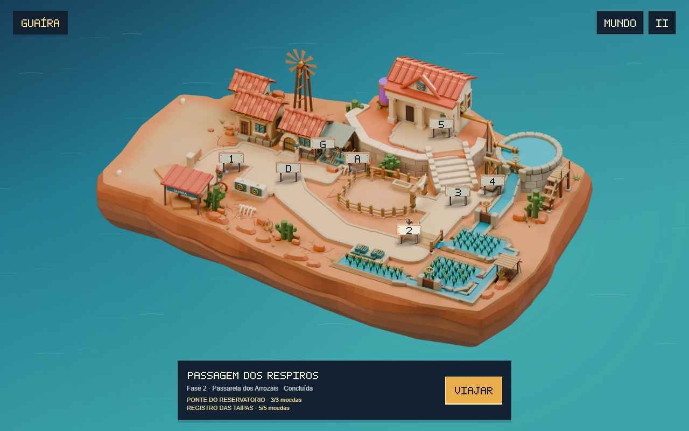
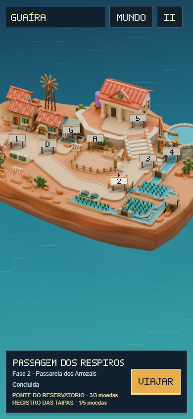
Teclado, toque simulado, pausa, retorno ao mapa e recarregamento passaram nas oito rotas. A exploração continua opcional; as cinco etapas da campanha mantêm sua progressão.
Diagnóstico e decisões desta rodada · Resultados verificáveis
Subir, observar e transformar a passagem
Respiros · Registro das Taipas
A casa de retorno oferece um caminho acima dos canais. Um mexedor recolhe as pinças, anuncia o giro e protege a chegada ao registro. O patamar antes dele permite observar o ciclo. Vencer o encontro e fazer a manutenção fecha a descarga da margem; os apoios seguintes descem junto da tubulação.
Alívio · Passadiço do Coletor
Uma passarela passa acima do arremessador. O vagonete percorre o trilho, freia nas pontas e anuncia a inversão. Há espaço para aterrissar antes de entrar na patrulha. O registro fecha a saída do coletor; a descida reencontra a margem antes das duas descargas independentes de Contrapressão.
Subida pelos andaimes, observação do giro, ataque durante o descanso e manutenção antes de retornar à margem. Trecho de uma execução completa desde o início, sem dano. Física a 60 Hz, captura a 30 fps, sem áudio.
Escolhas com consequência: cada desvio acrescenta cinco moedas e fecha apenas sua descarga. É possível voltar pelos apoios e continuar pelo piso. Permanecer na faixa do mexedor ou colidir com o vagonete causa dano real.
As duas rotas foram concluídas com seis tempos diferentes de chegada. Foram conferidos morte, retomada, retorno ao caminho baixo, teclado, toque simulado e movimento reduzido. Execuções ensaiadas verificam os percursos; descoberta e dificuldade percebida ainda precisam de primeiras partidas externas.
Diagnóstico e decisões desta rodada · Resultados verificáveis
Subir ao aqueduto. Explorar sob a pressão.
Subida · Escadaria do Aqueduto
Duas muralhas ganham altura até a Casa da Vazão. Uma couraça guarda o primeiro patamar; a tábua sobre o vão cede. Na margem seguinte, o arremessador anuncia o barril. Há espaço para aterrissar, observar e preparar o contra-ataque.
Galeria · Desvio de Inspeção
A grelha protege o corredor superior. A tampa abre outra possibilidade: explorar por baixo, vencer a couraça e fechar o registro. Os degraus retornam ao corredor; depois da manutenção, voltar por cima permite recolher as moedas da outra rota.
Patamares de pedra, couraça, tábua frágil e salto sobre o barril antes da chegada elevada. Trecho de uma execução completa desde o início da fase, sem dano. Captura a 30 fps; física a 60 Hz. Sem áudio.
Conferido em movimento: o último combate da Galeria foi ajustado para manter jogador, inimigo e aterrissagem na tela. As novas conexões usam a física, os inimigos, os registros e as regras de morte do jogo. A tábua pode derrubar Feka; a descarga pode feri-lo.
Os três percursos passaram por quatro tempos de chegada, além de morte, retomada e retorno para explorar. São execuções ensaiadas: a descoberta das rotas e a dificuldade percebida ainda precisam de primeiras partidas externas.
Do armazém ao cais: decisões que mudam o percurso
Travessia · Terreiro da Colheita
A entrada é defendida pelo carregador. No caminho baixo, dois canais deixam uma taipa firme para parar e preparar o segundo salto. A varanda do armazém oferece mais moedas, uma couraça e um trecho de madeira frágil. O caminho alto volta à margem por uma descida em degraus. Há chão firme antes da patrulha final.
Pátio · Cais de Transbordo
Dois elevadores alternam a altura usando o mesmo motor e transporte do restante do jogo. Uma ilha fixa separa os saltos; nela é possível parar e observar o próximo ciclo. A doca de chegada e seus degraus aparecem antes do desembarque. A patrulha final fica além da área de aterrissagem.
Aproximação pelo armazém, couraça vencida, tábua frágil e descida em degraus. Trecho de uma execução completa desde o início da fase, sem dano. Captura a 30 fps; física a 60 Hz. Sem áudio.
A revisão mudou a geometria: os primeiros saltos dos elevadores escondiam o destino no ápice. A ilha e a doca passaram à altura de transferência, e as saídas altas ganharam degraus contínuos. O enquadramento acompanha os apoios reais, mantendo Feka inteiro abaixo do HUD.
As três opções foram percorridas com quatro tempos de chegada. Houve também quedas reais, retomada no checkpoint conquistado e dez segundos de espera na ilha. Teclado e toque simulado foram conferidos, incluindo movimento reduzido e pausa. Esses testes verificam os percursos e a resposta do jogo; a dificuldade percebida e a descoberta ainda precisam de primeiras partidas externas.
Dois lugares, quatro maneiras de seguir
Respiros · Bacia das Bombas
A doca permite esperar, embarcar e desembarcar no transporte nativo. A passarela baixa oferece um caminho mais rápido, com saltos que pedem freada e tábuas que cedem. A margem de chegada tem espaço antes da couraça; um checkpoint protege a entrada do trecho.
Alívio · Contrapressão
Duas grelhas alternam suas descargas, com um apoio entre elas. A manutenção exige subir e enfrentar uma couraça para alcançar o registro da segunda saída. A primeira continua ativa, e o arremessador da saída conserva seu aviso e sua recuperação.
Embarque no transporte, travessia e desembarque na margem. Trecho de uma execução completa desde o início da fase, sem dano. Captura a 30 fps; simulação nativa a 60 Hz. Sem áudio.
O primeiro desenho deixava o apoio central da passarela baixo demais durante o salto. Os três apoios agora compartilham uma altura legível e a câmera antecipa o próximo pouso. O transporte usa os trilhos, rodas e física do restante do jogo; reservatórios e tubulação dão contexto às grelhas e ao registro.
16 percursos com diferentes tempos de chegada; quatro opções conferidas por teclado e toque simulado, incluindo pausa durante a travessia. A permanência na passarela também foi testada: há queda real e retorno ao checkpoint conquistado. Isso verifica funcionamento e legibilidade; descoberta e dificuldade percebida ainda precisam de primeiras partidas externas.
Enxergar a margem antes de descer
A câmera mostrava os patamares, mas podia esconder o chão depois do último apoio. Agora essa margem também participa do enquadramento. O nome do desvio acompanha a descida inteira; uma pequena freada não anuncia que o jogador decidiu voltar.
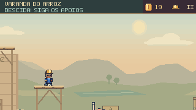
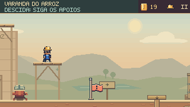
Mesmo percurso e mesmo instante da simulação. A mudança está no enquadramento da chegada.
A tábua avisa, cede e permite reagir
Uma falha de contato deixava uma borda sustentar Feka indefinidamente depois de a tábua central cair. O motor agora considera todos os apoios sob os pés. A rachadura abre antes da ruptura e a madeira se separa. Nos quatro desvios abaixo, a rota inferior permite tentar uma recuperação.
Trecho de uma execução completa dos Respiros: a tábua cede, Feka alcança o apoio baixo e observa a margem. A continuação até o fim foi conferida sem dano. Captura a 30 fps, simulação a 60 Hz, sem áudio.
Esperar muda o encontro
Quatro tempos de espera nas seis aproximações: 24 execuções concluídas, com as recompensas altas e os guardas vencidos. Permanecer dentro da zona anunciada de uma investida continua sendo perigoso.
Errar sem perder a exploração
Quatro quedas de passarelas foram seguidas até o fim. Nas seis fases, morrer depois do desvio conserva as moedas e retorna ao ponto conquistado; as moedas recolhidas não reaparecem.
Aprender, explorar e enfrentar combinações novas
As antigas saídas agora conduzem ao restante das fases. A Travessia desenvolve o uso de comportas com patrulhas e canais; os Respiros alternam pressão, altura e inimigos; a Subida exige continuar sobre tábuas frágeis. Galeria e Alívio mantêm a exploração opcional e recebem desafios próprios.
44 inimigos, seis comportamentos
Patrulheiros, cascudos com couraça, arremessadores, investidores, mexedor e vagonete usam o combate nativo. Silhuetas, preparação e recuperação mostram como abordar cada encontro.
Risco com espaço para aprender
Água ativa causa dano, canais provocam queda e tábuas cedem. Os 27 pontos novos de retomada foram conferidos parados e em movimento; há caminho sem dano a partir de cada um.
Oito desvios, trinta moedas
Os seis caminhos altos iniciais recebem a companhia do Registro das Taipas e do Passadiço do Coletor. Cada rota tem seu guarda, apoios e recompensas; as duas novas também mudam uma descarga do percurso.
Ver antes de saltar
Os apoios dividem as descidas. A câmera acompanha o percurso escolhido e o retorno, preservando o jogador na tela. Avisos consideram distância e altura: uma grelha distante não esconde um arremesso próximo.
| Fase | Antes | Agora | Inimigos |
|---|---|---|---|
| Travessia | 1.536 px | 4.352 px | 8 |
| Pátio | 960 px | 3.840 px | 7 |
| Respiros | 1.152 px | 4.256 px | 7 |
| Subida | 1.344 px | 4.544 px | 8 |
| Galeria | 704 px | 3.520 px | 7 |
| Alívio | 736 px | 3.072 px | 7 |
39,3 segundos de execução ensaiada, 24 moedas, sem dano. Captura a 30 fps; física a 60 Hz. Sem áudio. O tempo não estima uma primeira partida.
Como os desvios foram construídos · Diagnóstico das oito fases · Conferência daquela rodada
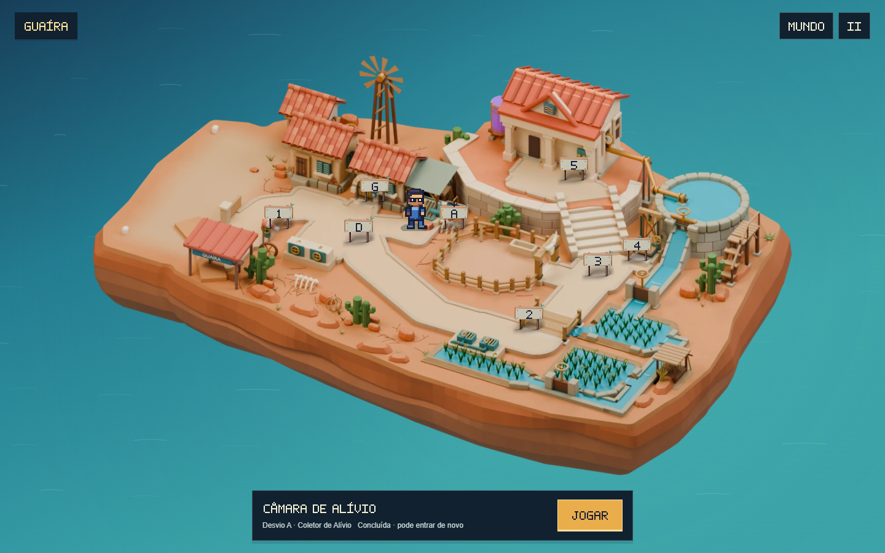
Uma escolha sem perder uma fase
É possível começar pela Travessia ou pelo Pátio e explorar a outra entrada depois. Sua conclusão fica salva separadamente. Os Respiros continuam sendo o próximo trecho, e a Serra abre após vencer o Prefeito.
Chegar faz parte do percurso
A conferência usou a chegada de avião e a caminhada entre entradas, com os bloqueios normais da campanha. Visitar o mapa, escolher um destino ou entrar numa oficina não concede vitória nem libera um chefe.
Oficinas com estrutura, luz e identidade
Janelas altas revelam a paisagem de fora, peças de madeira mostram os encaixes do teto e molduras de pedra dão espessura às passagens. As cores dos detalhes ficam abaixo do contraste das bordas jogáveis, tampas e água perigosa.
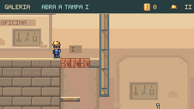
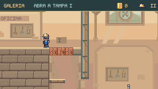
Mesmo quadro, mesmos comandos, física e câmera nativas. O ventilador usa poses desenhadas em pixels; o eixo e a grade ficam fixos. A pausa congela a animação e movimento reduzido mantém uma pose estável.
Arquivo: lição inicial da Galeria
Registro anterior: 12,65 segundos, 60 fps, sem áudio. Mostra a lição inicial; a fase atual continua para o poço de manutenção e as oficinas.
Arquivo: lição inicial do Alívio
Registro anterior: 10,22 segundos, 60 fps, sem áudio. Mostra a abertura; os ramais novos vêm depois dessa área.
O que cada lugar oferece ao jogador
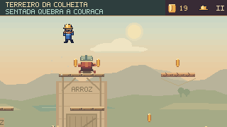
Abrir os 16 momentos deste percurso

Orientação coerente
O Pátio e a Subida usam os mesmos nomes de lugar no mapa e no capítulo. A Subida apresenta o elevador e os telhados como opções; a orientação do Prefeito explica o corte de pressão e o golpe por cima.
Chefes dentro da jornada
Ossabravo foi percorrido com investidas, ossos quicantes e retorno. O Prefeito foi vencido através dos registros e suas três etapas. O resultado final devolve água à ilha e permite continuar para a Serra.
O mesmo controle por toda a jornada
O controle padrão já funcionava no mapa, mas perdia a conexão com as fases de Guaíra. As oito cenas agora recebem seus comandos pelo mesmo sistema de entrada do jogo: direcional ou analógico para andar, A/× para pular, X/□ para correr, ↓ no ar para a sentada e Start para pausar.
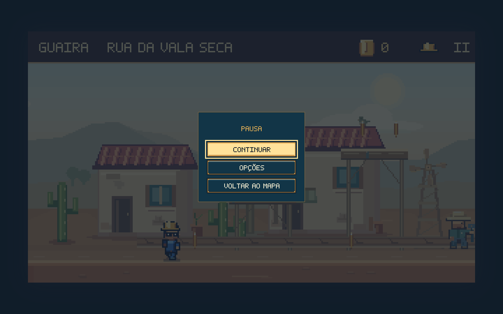
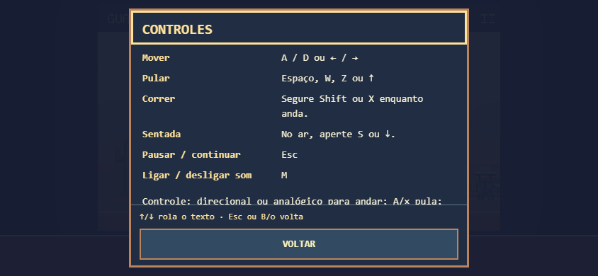
Perder, voltar e continuar
As verificações incluem entrar na água, perder o capacete e morrer antes e depois do ponto seguro. O retorno usa o ponto correto, restaura a tentativa e permite concluir a passagem. Nenhuma vitória é concedida pelo erro.
Interrupções sem comandos presos
Desconectar o controle, trocar de janela, abrir a ajuda e recomeçar soltam os comandos antigos. Teclado e toque continuam disponíveis. Ao reconectar, solte os botões antes de retomar.
Campanha normal conferida no navegador: nove execuções, oito cenas distintas, visita à abertura alternativa, recarregamento do progresso e Serra liberada após o Prefeito. Menus e ajuda também conferidos em 1440 × 900, 844 × 390 e 390 × 844; as duas telas menores usam movimento reduzido.
Conferência da experiência integrada
Ilha: 548 peças estruturais fechadas; 590 pontos de caminhada e 1.770 verificações de apoio, sem falta de piso ou colisão corporal com o cenário. O Blender e os arquivos publicados concordam nas posições e profundidades. A imagem da ilha agora usa a mesma revisão de cache que sua profundidade.
Campanha normal: as oito fases foram concluídas no mesmo progresso, com recarregamento após o desvio, bloqueios de chefes e liberação da Serra conferidos. Uma segunda partida também verificou o Pátio como primeira fase.
Percursos atuais: Subida e Galeria foram recapturadas integralmente nesta rodada. Travessia, Pátio, Respiros e Alívio mantêm suas gravações atuais; Ossabravo tem uma nova revisão de arcos e pisadas; o Prefeito recebeu frenagem e animações de movimento. As oito cenas continuam incluídas na conferência de progressão.
Revisão atual dos fundos: 3.719 testes TypeScript aprovados, zero falhas e um caso opcional ignorado; mais três testes JavaScript aprovados. Validadores, TypeScript e build aprovados. Os vinte casos desta rodada conferem encaixes, fundações, paralaxe, continuidade do céu, pausa e movimento reduzido. As seis partidas de comparação conservam posições e câmera da referência. A campanha normal passou novamente em nove execuções com gamepad simulado, incluindo as oito cenas e os dois chefes. Resultados desta revisão. Estas provas não medem a diversão de uma primeira partida.
Risco, descidas e retomadas · Campanha atual · Controles atuais · Arquivo: criação dos desvios · Arquivo: primeira expansão · Arquivo: controles e retomadas · Revisão de arte e exploração · Modelo e caminhos